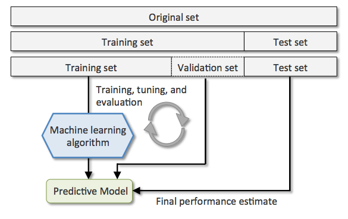
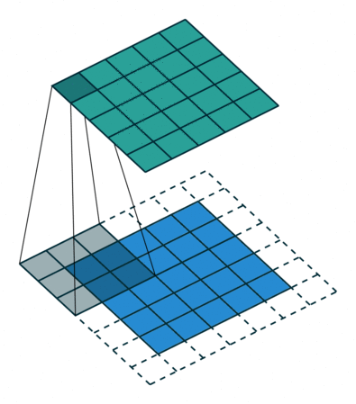

Machine Learning
The goal of this document is to give an introduction to the general concepts and theory around Machine Learning and its applications.
Table Of Content
1. Introduction
Understanding the nomenclature

Artificial intelligence is used to describe machines that mimic "cognitive" functions that humans associate with the human mind, such as "learning" and "problem solving" [1]. This general domain contains image processing, cognitive science, machine learning, neural networks and much more. Machine learning on its end is a more specific subject of AI that nowadays encapsulates almost all AI research topics. Its core idea is that the computer does not just use a pre-written algorithm, but learns how to solve the problem itself.
Machine Learning is a field of study that gives computers the ability to learn without being explicitly programmed. - Arthur Samuel (1959)
Machine learning started flourishing with the arrival of the big data, the increase in computation power (GPU) and the development of new machine learning algorithms.
Traditional programming VS Machine Learning

In traditional programming you hard code the behavior of the program. In machine learning, you leave a lot of that to the machine to learn from the data iteratively. ML is used in the case when traditional programming strategy falls behind and it is not enough to fully implement a certain task. This is usually the case when the amount of inputs is too high, as with forecasts, image processing, speech recognition, etc.
Branches of Machine Learning

Reinforcement learning is about optimizing a decision making policy with experiences and rewards. It focuses on finding a balance between exploration of territory and exploitation of current knowledge.
Example: the agent has to decide between two actions - moving the cart left or right - so that the pole attached to it stays upright

Supervised learning tries to learn a function that maps an input to an output based on a learning process over training examples. In supervised learning, each example is a pair consisting of an input object and a desired output value (labels). This topic divides into classification (hottest subject in machine learning) and regression (forecasts, predictions).
Unsupervised learning helps to find unknown patterns in an input dataset without pre-existing labels to regroup inputs into clusters, reduce the number of dimensions or simplify a vast input into a few principle components. The main methods used in unsupervised learning are principal component and cluster analysis.
In image classification, supervised learning will extract features from the input and learn to correctly link these features to the input label. Unsupervised learning with extract features from the inputs and only try to regroup them into different clusters.

2. ML Algorithms and Components
Algorithms and parameters
There is a wide range of algorithms available and none of them works best for all problems. Sometimes called a predictor, the algorithm will usually learn to optimize a prediction function h with parameters θ to optimize during training (if parametric). Here is a visual list of the most popular ones:
It is important to note that not all algorithms are parametric. Like the simple k-nearest neighbors algorithm that is intentiated with a chosen number of neighbors to look at in order to infer the value of a new input. In this case, k is called an hyperparameter. In machine learning, an hyperparameter is a parameter whose value is set before the learning process begins, while parameters are defined during training. In the coding process, hyperparameters are passed in as arguments to the constructor of the model class.
Some examples of hyperparameters include loss function, regularization, learning rate, number of leaves in a tree, number of hidden layers in a neural network, number of clusters in clustering techniques...
Capacity
An important property of a machine learning algorithm is its capacity. The capacity of a model describes how complex a relationship it can model, although the term is loosely defined and cannot really be quantified. Conceptually, capacity represents the number of functions that a machine learning model can select as a possible solution. A general rule is that the more parameters a model has, the higher is its capacity. A low capacity model faced with a complex task will tend to underfit (high training error). On the other end, a high capacity model applied to a simple task might overfit (low training error, but high validation and test error). A model will often include a regularization function that will increase the loss with the increase in complexity to limit overfitting.

Loss Function and Error
The empiric error R_emp corresponds to the mean of the loss calculated at each point with a chosen loss function L(y, ŷ) (usually either absolute error |y-ŷ| or quadratic error in regression, or cross entropy in classification) where ŷ is our prediction given by our predictor h with parameters θ. The predictor in our case is the neural network, while the parameters correspond to the weigths of its hidden layers. These parameters are optimized during training.
We could go deep into machine learning components to better understand not only how they work but mainly how one can work well (which as been the source of development for new ML algorithms). The list can be exhausting and a little math-oriented, so we will leave that aside for now since we want to jump into deep learning for image analysis.
Training, validation and test
The training procedure involves providing an ML algorithm with training data to learn from. For each sample, the model gives a prediction, calculates its error and the gradient. It then update its parameters directly (or through back-propagation) following a gradient descent. We usually predict a few samples in batches before calculating the error and backpropagating. This is set with the batch size hyperparameter (typically 64, 128...). A small batch size will make the gradient more noisy and "active" while a high batch size might make the training not efficient. Once the model has seen all the data, we have completed what is called an epoch (or iteration). This procedure will usually have to be carried multiple times for succesful training, hence multiple epochs.

The dataset is always split into training and test (usually around 80% training ratio). The test set is put on hold for final testing. Meanwhile during the training, a part of the training set is used for validation in-between epochs to measure overfitting. Validation set is usually obtained by taking 20% of the training data (or through a cross-validation technique).

Training and validation errors give a biased approximation of the risk of the model, while the test error gives an approximation of the risk that is not biased.
Evaluation metrics
To evaluate the performance of a model, different metrics are available depending on the type of the task. For regression problems, the metrics used are the popular R^2 and mean squared/absolute error. We will here look at a few different classification metrics: classification accuracy, area under ROC curve, confusion matrix and f1-score.
It is first useful to know the basic definitions for classification prediction results:

Classification accuracy is simply the percentage of correct predictions. This really is only suitable when there is an equal amount of observations for each class and that all predictions are equally important.
Area under ROC curve is a performance metric for binary classification problems that represents a model’s ability to discriminate between positive and negative classes. An area of 1.0 represents a model that made all predictions perfectly. An area of 0.5 represents a model as good as random. The ROC curve is created by plotting the true positive rate (sensitivity) against the false positive rate (false-alarm or 1-specificity) at various threshold settings.
The confusion matrix is a nice presentation of the accuracy of a model over two or more classes. Prediction labels are on the X-axis while the actual outcome labels are on the Y-axis. Each cell contains the number of predictions (or percentage) made for a given confusion state. The diagonal represents correct predictions. The following confusion matrix was obtained for a hand written digit classification model over the MNIST dataset.

From the confusion matrix a few metrics can be extracted for each class such as precision and sensitivity. The precision gives the performance for positive predictions, which is calculated using a prediction column in a confusion matrix. The sensitivity (or recall) evaluates the performance of positive predictions for a ground-truth label. These two metrics are often used in conjunction. Depending on the problem, a weigthed average of precision and sensitivity, called the F1-score, may be prioritized.
3. Neural Networks
After all the subjects we presented, we will focus our attention on supervised learning for classification, which is clearly the subject of interest for data analysis in science. To address the problem of classification, we will discuss two popular machine learning algorithms (predictors) suited for the task : the "simple" neural networks and the deep learning approach (mainly CNN). We will first introduce ourselves to the topic of neural networks by looking at the (very limited) perceptron.
An interesting and exhausting list of all the popular machine learning algorithms and predictors is also available here.
Single-layer NN (or Perceptron)
The simplest neural network format is called a Perceptron and consists of a single input layer connected to their corresponding weights. A weighted sum is then calculated and fed into a step function. This linear binary classifier can be used to say whether or not an input belongs to some specific class. We can generally say that a perceptron is a single-layer neural network or single-neuron NN.

To see a coding example of a simple perceptron I recommend looking at the code and explanation by Thomas Countz :
ximport numpy as npclass Perceptron(object): def __init__(self, no_of_inputs, threshold=100, learning_rate=0.01): self.threshold = threshold self.learning_rate = learning_rate self.weights = np.zeros(no_of_inputs + 1) def predict(self, inputs): summation = np.dot(inputs, self.weights[1:]) + self.weights[0] if summation > 0: activation = 1 else: activation = 0 return activation def train(self, training_inputs, labels): for _ in range(self.threshold): for inputs, label in zip(training_inputs, labels): prediction = self.predict(inputs) self.weights[1:] += self.learning_rate * (label - prediction) * inputs self.weights[0] += self.learning_rate * (label - prediction) Neural Network (multi-layer)

A neural network usually differs from the perceptron by having at least one hidden layer. A neural network has nodes (neurons) and edges (connections). Each node and edge usually has an associated weight (parameter) that is tuned during learning process. The weight changes the strength of the signal at a connection. For each hidden node (a perceptron on its own), the output is calculated by some non-linear sum of its inputs, the activation function (Sigmoid, Tanh, ReLu). It is important to give non-linarity to the model so it can learn to represent more complex non-linear mappings between inputs and outputs. Sometimes, a bias parameter is added to the sum to serve as a threshold to shift the activation function. For classification problems, the output layer will have the same number of nodes than the number of different classes. A softmax function is usually applied at the output to obtain a vector of probabilities that sum to 1.
The weights are initially set randomly (following a desired distribution). During learning process, the weights get adjusted after calculation of the error through a method called backpropagation.
To see a coding example of a neural network in detail (including backpropagation), I recommend looking at the code and explanation by Samay Shamdasani
4. Convolutional Neural Networks (CNN)
Convolutional filters
As the name suggests, a basic CNN still uses a somewhat similar architecture as the neural network we just studied, even though CNNs usually go into deep learning which means new algorithms and more complex architectures. The main difference are the hidden layers: instead of having hundreds of nodes fully connected together, we use a 'few' convolutional filters that are all moved accross the input image to create their own representation. The output of a filter usually has the same dimension as its input, compared to a NN node which always returns a scalar. Following this, a 2D filter 3x3 will have 9 weights (parameters) to adjust during training, but since it is not fully connected to all pixels, this generates a lot less parameters in the end, compared to neural networks.

A convolutional filter always has the same depth as the input tensor. The filter is moved accross the image and the output value is calculated at each step. Here is a visualisation for a filter of size 5x5 over an RGB image:
To keep the same dimension at output, a zero-padding can be added to the input image. To reduce dimension, we can tell the filter to step aside 2 pixels (stride of 2) at a time or more before computing the convolution.
| Padding = 1 | Stride = 2 |
|---|---|
|  |
Convolutional layers
A convolution layer is simply defined by having multiple filters that will move accross the input to each generate their own feature map representation. A convolutional layer will have a few hyperparameters such as the number of filters, their shape, their initial state, their stride (pixel stepping: usually 1), zero-padding.
This process will be done again a few times (number of convolutional layers) in deep learning.
This is the main idea behind deep learning...
Pooling layers
Since convolution will keep the input shape (except for the contour), this usually leads to an excess in dimensionality. All CNNs fix this by adding intermediate max pooling (or average pooling) layers to down-sample the input representation.
Dense layers
A dense layer, or fully-connected layer, is just a regular layer of neurons in a neural network, as we just looked at. They are usually inserted at the end of a CNN to classify. We usually say that the convolutional layers act as a feature extractor, while the dense layers act as the classifier. Notice that the output of the following AlexNet CNN is a vector of length 1000 which means his network was used to classify images into 1000 different classes (bus, train, person, dog, etc.).
Deep learning
This leads to an architecture that looks like this for the popular AlexNet CNN with 5 convolutional layers and 3 dense layers:
This image hides the other half of AlexNet used to run on 2 GPUs at the same time.
In deep learning, each feature layer usually reaches a deeper level of abstraction or complexity, from simple edges to actual objects. This is refered to feature hierarchy, and is better visualized:
Transfer Learning
Transfer learning is a machine learning method where a model developed for a task is reused as the starting point for a model on a second task. This is popular in deep learning given the resources and datasets required to train the models. The transfer learning only works if the features learned from the first task (base) are general enough to be applicable to the second task (target).
In transfer learning, the first step is to find a pre-trained model whose training data is somewhat similar to yours. Unless you have the same task, the model will surely need some tuning. This might only be about resetting the dense layers (classifier) with the appropriate number of classes.
The convolutional layers are then freezed during training where you will be optimizing the dense layers weights to better suit your task. Depending on the (non-)similarity of your data to the pre-trained model's data, you might have to unfreeze a few convolutional layers at the head of the model. The more layers you tune, the more data you'll need, but the more accurate (and specific) it should become.
For image data, it is common to reuse a model trained for the ImageNet classification competition. These models would take days or weeks to train on modern hardware.
Deep Learning Coding Tutorial
To see a coding example on deep learning in detail, I recommend looking at the tutorial by Dipanjan Sarkar or at its source code that I executed and commented on a jupyter notebook ML example.

Typical procedure
Load data and labels
Might have to resize images, apply filters... If its too big to load, think about writing a DataGenerator class.
Split dataset into training, validation and test
Usually around 60% training, 20% validation, 20% test. Make sure the data is different for each set
Scale
Simple normalization (remove minimum, divide by max value) Or StandardScale (unit-variance and zero-mean)
Build the model
Look at other models online, recycle, transfer learning if possible. Compile with an appropriate loss function and optimizer for your problem.
Train
Batch size usually around 32, 64, 128. Use callbacks for early stopping, checkpoints. Then nb. of epochs can be anything high enough...
Evaluate on test set
References
[1] Russell, Stuart J.; Norvig, Peter (2009). Artificial Intelligence: A Modern Approach (3rd ed.). [2] École d'hiver en apprentissage automatique (2019), Université Laval.